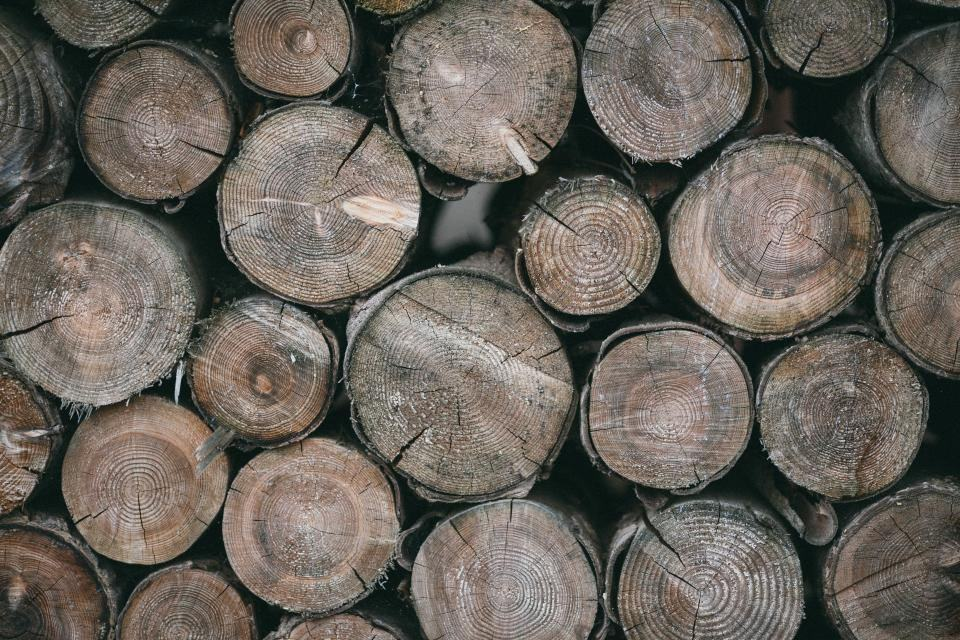

Från karta till säker hage
 Steg 1 / 4
Steg 1 / 4Telefon och karta
Berätta hur många hagar och hästar du har. Skicka gärna en karta över gården.
NästaInventering Steg 2 / 4
Steg 2 / 4Inventering
Karin går igenom hagar, alléer och gårdsträd och märker allt som behöver åtgärdas.
NästaKarta och fast pris Steg 3 / 4
Steg 3 / 4Karta och fast pris
Du får en karta och ett fast pris. Brådskande giftiga träd prioriteras före betessläppet.
NästaUtförande
Steg 4 / 4Utförande
Vi fäller, rycker upp fröplantor och flisar på plats. Hästarna behöver bara flyttas från den hage där vi arbetar.
Ring Karin

Så går besöket på gården till
Karin kommer ut, går hagarna med dig och berättar vad hon ser. Besöket kostar 900 kr och dras av om du beställer inventering eller åtgärder.
Vi stänger alltid grindarna efter oss och frågar innan vi flyttar en häst.
Vad behöver gården?
- 01
Haginventering
Vi går igenom hagarna och märker träd som är giftiga för hästar.
Läs mer - 02
Fällning av tysklönn
Tysklönnar vid och i hagar fälls och fröplantorna rycks upp.
Läs mer - 03
Skuggträd i hagen
Vi planterar lind, björk och rönn som ger skugga utan risk.
Läs mer - 04
Alléer till gården
Kronhöjning så att hästtransporter och skördetröskor kommer fram.
Läs mer - 05
Läplanteringar
Uttjänta lähäckar av poppel och gran förnyas i etapper.
Läs mer - 06
Stall och maskinhall
Träd som hotar tak, hängrännor och ventilation tas ned.
Läs mer - 07
Gårdspriser
Fasta priser för inventering och fällning.
Läs mer - 08
Ring Karin
Karin svarar efter morgonfodringen.
Läs mer


Frågor om hagar och giftiga träd
- Illustrationsbild

- Fråga 01
Vilka träd är giftiga för hästar?
Tysklönn (sykomorlönn), idegran, robinia och i större mängd ekollon och bokollon. Även rhododendron och buxbom i rabatter nära hagen är giftiga.
- Fråga 02
Är vanlig skogslönn farlig?
Skogslönn är inte kopplad till atypisk myopati på samma sätt som tysklönn. Vi visar skillnaden på blad och frön vid besöket.
- Fråga 03
När är riskerna störst?
På hösten när fröna faller och på våren när groddplantorna kommer upp. Därför inventerar vi helst på sensommaren.
Hittar du inte svaret? Ring eller mejla oss.
070-174 06 82Ring Karin- Fråga 04
Räknas gårdens fällning som RUT?
Om gården är din bostad och inte drivs som företag kan arbetet på tomten ge RUT. Jordbruksföretag faktureras utan RUT, men momsen är avdragsgill.

- Fråga 05
Behöver jag dispens för att fälla i allén?
Alléer i jordbrukslandskapet är biotopskyddade. Fällning kräver dispens från länsstyrelsen, men beskärning gör det oftast inte.
Gårdspriser
Haginventering
VanligastGenomgång och märkning av giftiga träd.
- Karta över hagarna
- Färgband på varje träd att fälla
- Åtgärdslista i prioritetsordning
- Avräknas vid fällning
2 900 krupp till fem hagarBoka besiktningFällning vid hage
Fällning och bortforsling av giftiga träd.
- Flishugg på plats i hagen
- Flisen bortkörd från hagen
- Fröplantor uppryckta runt trädet
- Stängslet skyddas
4 600 krträd upp till 15 mBoka besiktningAllébeskärning
Kronhöjning till 4,5 meters fri höjd.
- Klättring eller lift efter läge
- Döda grenar bort
- Riset flisat vid vägkanten
- Hjälp med dispens vid behov
fr. 1 300 krper trädBoka besiktning
Priser inklusive moms. RUT gäller bara privat bostadstomt.
Senast på gårdarna


Hästägare och lantbrukare
Vi hade ingen aning om att lönnarna vid ridbanan var tysklönn. Karin hittade tolv, och vi har inte haft ett sjukdomsfall sedan dess.
Allén var så tät att hästtransporten skrapade varje gång. Nu kör vi in utan att tänka på det.
Henrik körde ut veden med traktorn och staplade den vid pannrummet. Gårdsfolk som förstår gårdar.
Ingen häst ska bli sjuk av sin hage
Atypisk myopati ökar i Sverige, och många hästägare vet inte vilka träd som är farliga. Vi inventerar, fäller och planterar ofarliga ersättningsträd, och tysklönn flisas alltid och körs bort så att fröna inte sprids i hagen.

- 010fall av atypisk myopati i hagar vi har säkrat
- 021:1ofarligt skuggträd för varje fällt giftigt
- 03100 %av tysklönnens flis körs bort från hagen